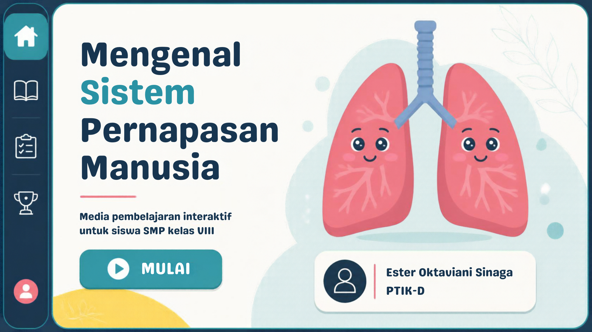
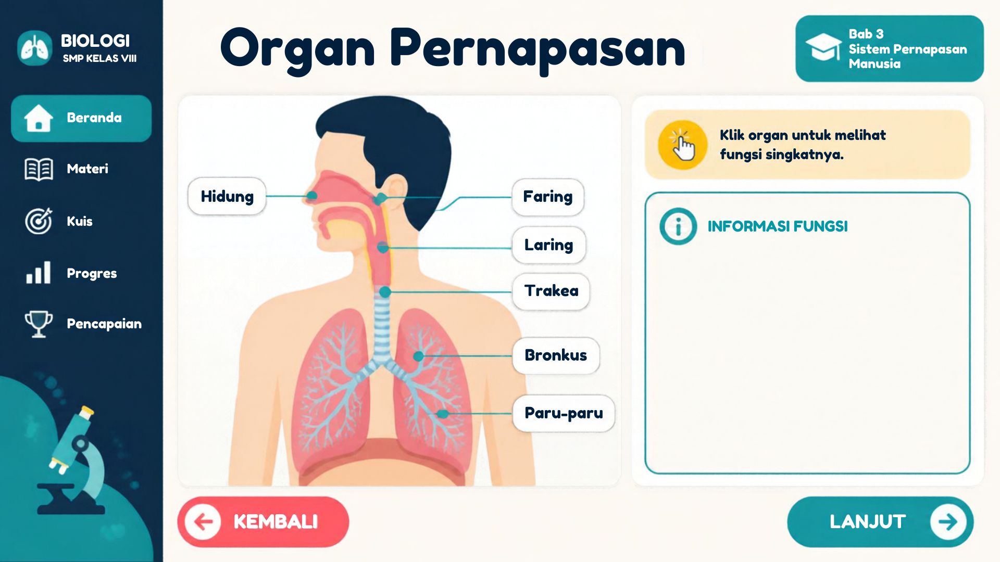

Mengenal Sistem
Pernapasan
Manusia
Pelajari organ-organ vital, mekanisme pertukaran udara inspirasi-ekspirasi, serta uji pemahamanmu melalui aktivitas interaktif dan kuis seru!

Tujuan Pembelajaran
Setelah belajar menggunakan media interaktif ini, kamu diharapkan mampu:
Pengertian Sistem Pernapasan
Menjelaskan pengertian serta hakikat sistem pernapasan pada tubuh manusia dengan tepat.
Organ & Fungsinya
Mengidentifikasi 6 organ utama pernapasan manusia dan menguraikan fungsi spesifik masing-masing organ.
Mekanisme Udara
Menganalisis perbedaan mekanisme inspirasi (menarik napas) dan ekspirasi (menghembuskan napas).
Evaluasi Pemahaman
Mengukur tingkat pemahaman melalui kuis interaktif dengan umpan balik langsung dan rekomendasi belajar.
Organ-Organ Pernapasan Manusia
Aktivitas Interaktif: Klik kartu organ atau titik pada diagram untuk mempelajari detail fungsinya.

Rongga Hidung
Tempat masuknya udara pernapasan pertama kali. Di dalam rongga hidung terdapat rambut-rambut hidung dan selaput lendir yang berfungsi menyaring debu, mengatur suhu (menghangatkan), serta melembapkan udara yang masuk.
Rambut hidung (silia) bergerak seperti sapu mikro yang mencegah partikel kotoran dan bakteri masuk ke paru-paru.
Proses Pernapasan: Inspirasi vs Ekspirasi
Bandingkan dua fase pernapasan manusia melalui perbandingan berdampingan dan simulasi gerakan.
Inspirasi (Tarik Napas)
Proses masuknya udara luar yang kaya oksigen ke dalam paru-paru.
- Otot antartulang rusuk berkontraksi, tulang rusuk terangkat ke atas.
- Diafragma berkontraksi sehingga posisinya mendatar.
- Volume rongga dada membesar, tekanan udara dalam paru-paru mengecil.
- Udara luar bertekanan lebih tinggi mengalir masuk ke paru-paru.
Ekspirasi (Hembuskan Napas)
Proses keluarnya udara kaya karbon dioksida dari paru-paru ke luar tubuh.
- Otot antartulang rusuk relaksasi, tulang rusuk turun kembali.
- Diafragma berelaksasi dan melengkung kembali ke atas.
- Volume rongga dada mengecil, tekanan dalam paru-paru meningkat.
- Udara dalam paru-paru terdorong keluar menuju atmosfer.
Video Pembelajaran: Pertukaran Gas di Alveolus
Tonton video interaktif berikut, lalu jawab pertanyaan cek pemahaman singkat di sebelah kanan.
Berdasarkan video di samping, di manakah letak kantung kecil tempat terjadinya pertukaran gas O₂ dan CO₂ secara difusi?
Bagian organ pernapasan yang menjadi jalur masuknya udara pertama kali dan dilengkapi rambut-rambut halus serta selaput lendir untuk menyaring debu adalah...
Trakea tersusun atas cincin-cincin tulang rawan dan epitel bersilia. Fungsi utama dari silia pada dinding trakea tersebut adalah...
Pada saat seseorang melakukan proses inspirasi (menarik napas), perubahan apakah yang terjadi pada rongga dada dan paru-paru?
Bagaimanakah kondisi otot diafragma pada saat tubuh kita melakukan fase ekspirasi (menghembuskan napas)?
Pertukaran gas oksigen (O₂) dari udara ke dalam darah dan pengeluaran karbon dioksida (CO₂) dari darah ke udara berlangsung secara difusi pada organ...
Kerja Bagus, Siswa!
Kamu telah menyelesaikan seluruh materi pembelajaran dan evaluasi kuis sistem pernapasan manusia.